תכנון ועיצוב דירת דופלקס בלב תל אביב, פיארברג 11
מגישה: ענת אמיר
מארג של חיים משותפים
קסם וערן הם משפחת פרק ב' שחיברה שני עולמות שונים לבית אחד, הם בנו יחד מערכת משפחתית חדשה שבה חמישה ילדים, כלב, חתול והמון דינמיקה נשזרים לחיי היומיום.
למרות שחלק מהילדים כבר פרשו כנפיים, הבית נשאר נקודת המפגש שאליה כולם חוזרים, מקום שמחבר בין אנשים, קצבים וסיפורים שונים לכדי מארג אחד.
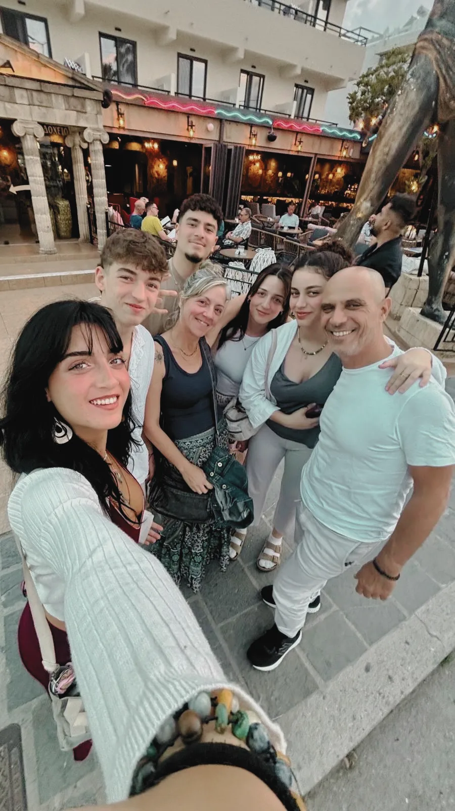
כמות הנפשות בבית: ביומיום: 3 נפשות שחיות בבית · בסופי שבוע: 5
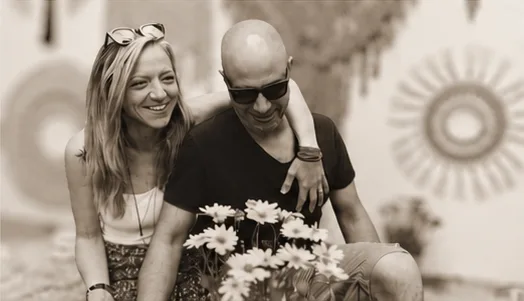
קסם היא אמנית חוטים ויוצרת, היצירה היא חלק בלתי נפרד מחיי היומיום שלה. ערן הוא איש שיווק ויזם, עובד לעיתים קרובות מהבית ומעדיף לעבוד בלב ההתרחשות המשפחתית.
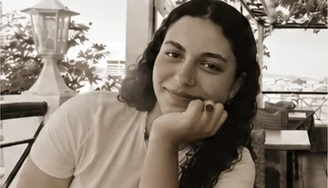
הבת של ערן, בת 16. האחות ה״קטנה״ בבית, שחקנית כדורגל מקצועית שמביאה איתה תנועה, קצב ואנרגיה. חיה בבית מחצית מהזמן אשר מתחלק בין הבית של קסם וערן לבית של טלי, אימה.
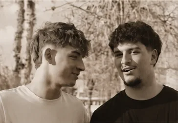
איתי (של קסם) וגילי (של ערן), בני 18, הפכו לאחים לכל דבר, חברים הכי טובים ועכשיו גם הקימו יחד גרעין לשנת שירות. חוזרים הביתה בסופי שבוע אחת לשבועיים מהגרעין, אח״כ ילכו לצבא, שואפים לקרבי (יציאות לא סדירות).
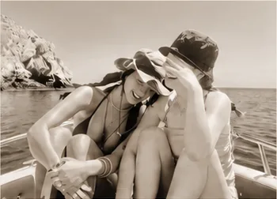
הבנות הגדולות של קסם, כבר עזבו את הבית. למרות שהן אינן מתגוררות בבית, הבית ממשיך להיות נקודת מפגש שאליה כולם חוזרים בעיקר בסופי שבוע לארוחות שישי, חגים וכו׳.
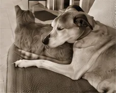
מיצי החתולה ואוזי הכלב, גם הם כמובן חלק בלתי נפרד מחיי הבית.
הפרויקט שואב השראה מעולם האריגה ומעבודות החוטים של קסם.
העבודות של קסם מתאפיינות בעבודת מקרמה וסריגת מחט יחידה. גופי תאורה ואומנות מכותנה ממוחזרת, ראפיה, חוט נייר בשעווה, חישוקי ראטן וענפים מגולפים, טבעות וספירלות, בחרדל ובגווני אדמה
האמנות אינה מוצגת רק בתוך הבית, היא חלק ממנו - החומר, האור והטקסטורה הופכים לשכבות שבונות את המרחב.
שתי וערב הם הבסיס ליצירת מארג. מערכת של צירים אנכיים ואופקיים אשר במפגש ביניהם נוצר מבנה יציב ושלם.
הפרויקט מתרגם את עקרון האריגה למרחב: שתי משפחות מתחברות למשפחה אחת, שתי דירות נפרדות נשזרות לדופלקס אחד, ומערכות של תנועה, חומר ואור נפגשות לכדי חוויית מגורים משותפת.

ה"שתי" מתבטא בצירים האנכיים של הבית: קשרי עין, חלל כפול היוצר חיבור בין המפלסים, רפרפות האלון במדרגות אשר יוצרות תחושה של ״נול״, מסכי החוטים התוחמים את הסטודיו, אלמנטים בנגרות לאורך הבית מהמטבח ועד חדרי השינה והרחצה.
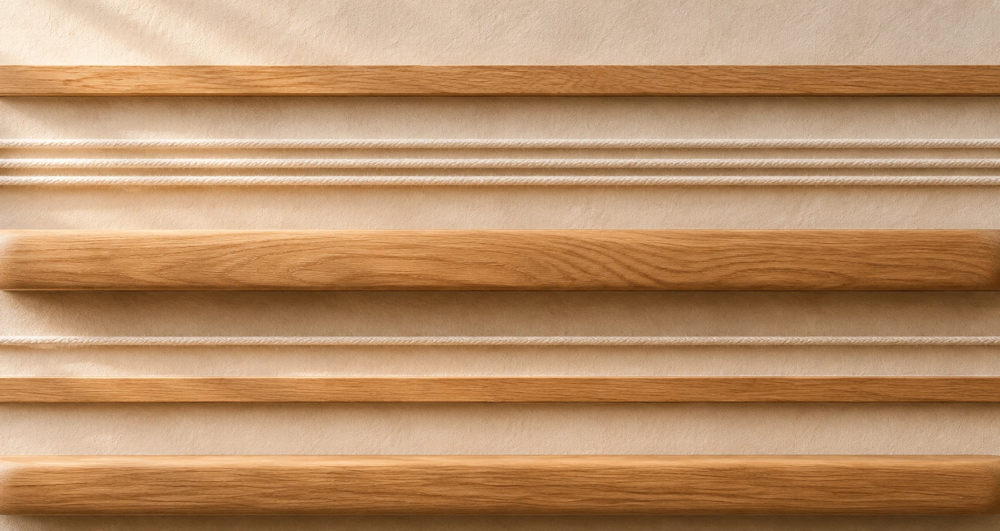
ה"ערב" מתבטא בתנועה, בזרימה ובמערכות היוצרות רצף מרחבי. רצפה יצוקה רציפה בגוון חול חם בחלל הציבורי מהכניסה ועד הסלון והמטבח, אריחים אופקיים בחדרי הרחצה, נגרות אופקית ברחבי הבית ועוד.
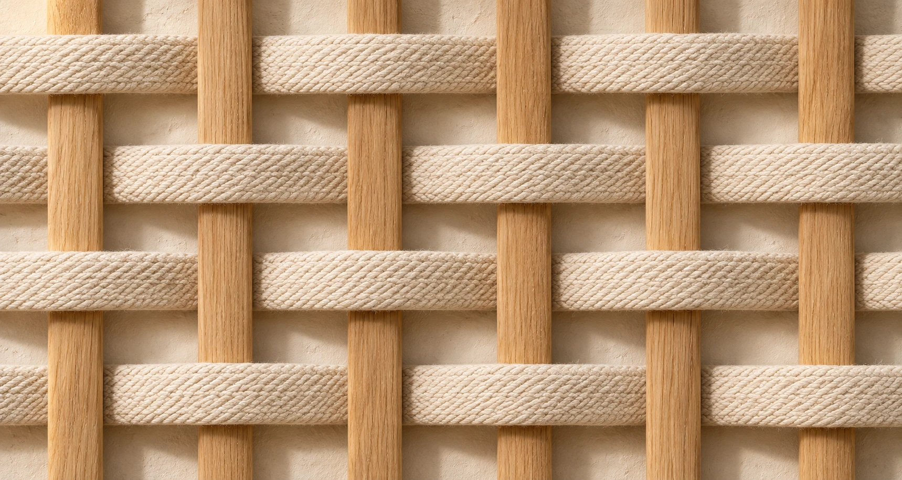
הבית ארוג כולו שתי וערב, חתך המטבח: מחורץ, אבן אופקית, ומחורץ שוב, החלל הכפול שיוצר ציר אנכי שחוצה שתי קומות אופקיות, פרקט בהנחת פישבון בחללים בפרטיים והקרמיקות שמשולבות באופן שמשתלב כשתי וערב, ועוד ועוד נקודות מפגש אשר בהן - נוצר הבית.
הגריד של שתי וערב מבוטא בגריד עץ חם שבו משתלבים הקווים המעוגלים מהיצירות של קסם

בקומת הקרקע רקע חומרי שקט וניטרלי של רצפה יצוקה בגוון חול חם ועץ טבעי המאפשרים לעבודות החוטים ולטקסטיל להפוך למוקד המרכזי בחלל

האור פועל כחומר נוסף במרחב. דרך מסננים, טקסטילים וצמחייה נוצרים דפוסים משתנים של אור וצל, שמזכירים אריגה
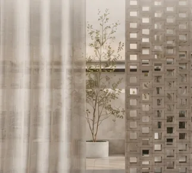
מחיצות, וילונות ואלמנטים חצי שקופים מייצרים שכבות של מבט, אור ופרטיות, ויוצרים איזון בין חיבור להפרדה

גרם המדרגות ורצועת האור הצרה שנפתחת בין הקומות מחברים את שתי הדירות לבית אחד, רציף ומחובר
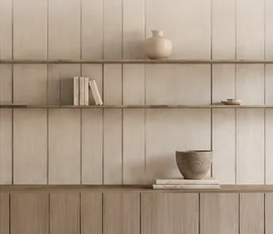
קווים אנכיים ואופקיים, גריד מערכות ואלמנטים חוזרים מבטאים את עקרון השתי והערב, ויוצרים סדר והמשכיות ברחבי הבית
בסיס: אלון חם, חול, אפור בטון, שחור ברזל. אקסנטים: חרדל, ראפיה, טרקוטה וירוק מרווה, כולם מתוך העבודות של קסם. הצבע מגיע מהאמנות, לא מהקירות
הבית מהווה נקודת מפגש בין יצירה, עבודה, משפחה ומנוחה
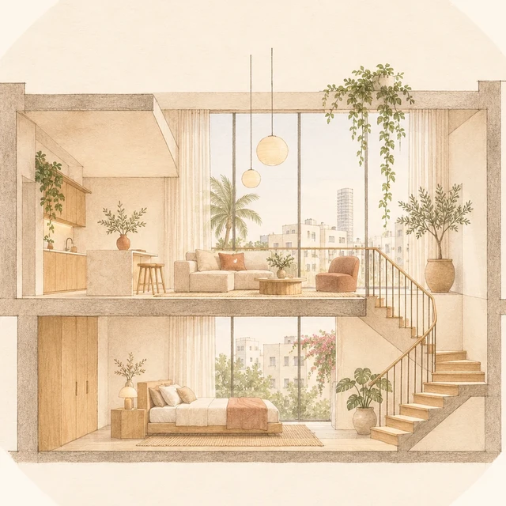
רצף בין ציבורי לפרטי, בין יצירה למנוחה ובין בני הבית השונים
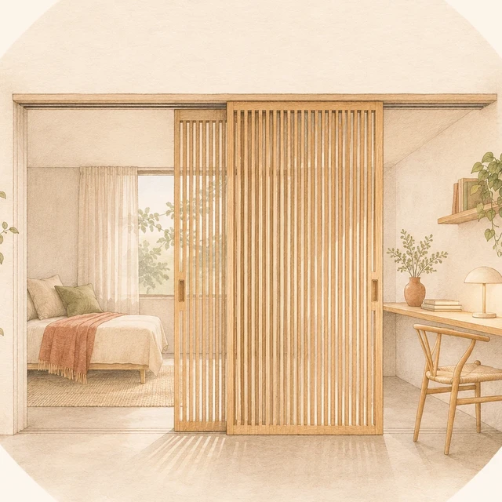
הבית מותאם למציאות משפחתית משתנה - ילדים, שעוזבים וחוזרים, אורחים שמגיעים בסופי שבוע וצרכים משתנים
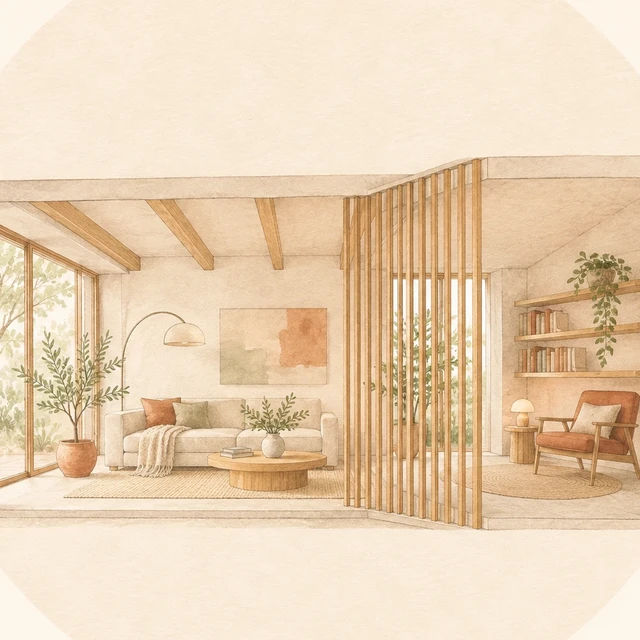
הבית מאפשר מפגש, קשר עין ותחושת שייכות לצד פרטיות ומרחב אישי לכל אחד מבני המשפחה.

כל החללים הציבוריים הם מרחב תצוגה ליצירות החוטים של קסם ותהליך היצירה נוכחים במרחב הבית והופכים לחלק בלתי נפרד מחיי היומיום

הבית מהווה נקודת מפגש עבור המשפחה, החברים והאמנות ויצירת אינטימיות לצד הכנסת אורחים.


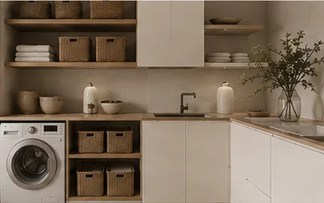
אותו חומר מקבל בבית תפקידים שונים – מיצירה ואובייקט ועד מחיצה, סינון אור ותאורה.
החוט מגדיר גבול בלי לסגור אותו. מקרמה במסגרות אלון בין הסלון לסטודיו, והטלוויזיה באמצע
העבודה ברצועת האור הופכת את החוט למוקד אמנותי בקנה מידה גדול, הנצפה משתי הקומות
גופי התאורה בבית, מעשה ידיה של קסם, מסננים את האור דרך סריגה בחוט, ויוצרים אווירה נעימה ומרככת בחלל
הסטודיו הוא המקום בו החומר, תהליך העבודה והיצירה נוכחים כחלק מחיי היומיום של הבית


המודל נבנה בקוד, ישירות מתוך קובץ האוטוקאד. כל קיר, פתח ומפלס נקרא מהשרטוט, שואב את הגיאומטריה המדויקת מתוך התוכנית האדריכלית ואת העיצוב המדויק (צבעים, טקסטורות, ריהוט, נגרויות וכו׳) מתוך היכרות מעמיקה עם הפרויקט ובריף עיצובי מדויק.
באמצעות המודל החי ניתן לערוך סיור בתוך המודל, להיכנס לכל חדר, לעמוד בו ולבדוק אותו, לפני שמשהו נבנה.
מתוך המודל לאחר בחירת האלמנטיים העיצוביים - ניתן להוציא תוכניות עבודה והדמיות
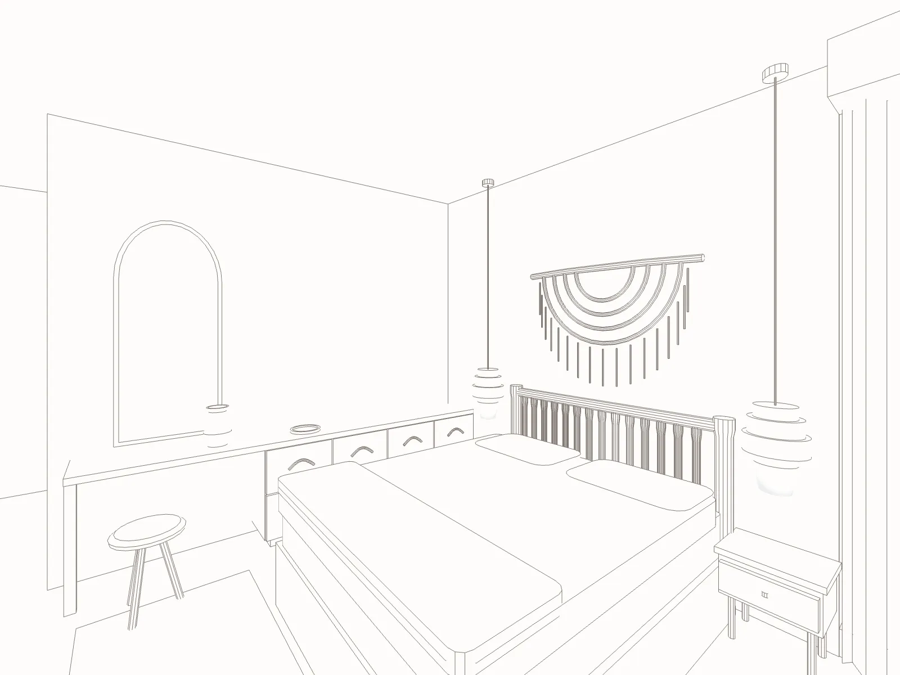

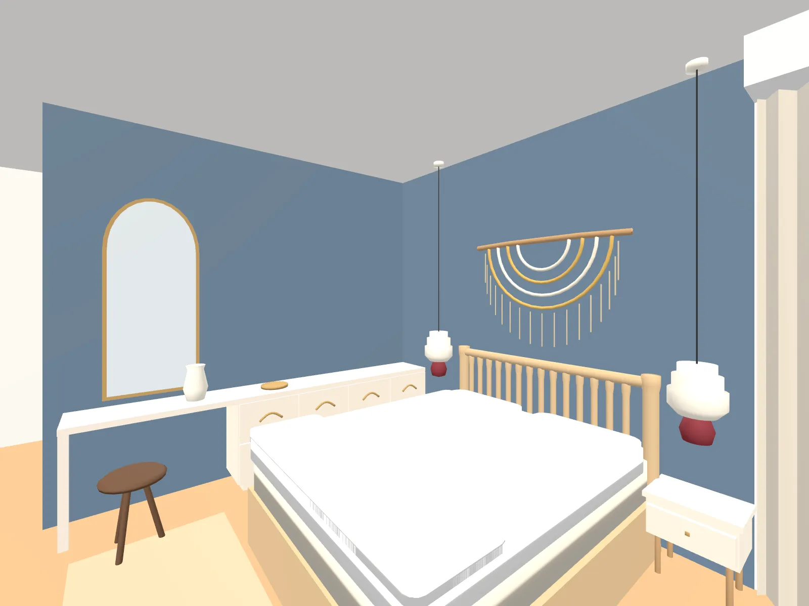

השתי, הציר האנכי: גרם המדרגות, ורצועת אור צרה בגובה 5.99 מטר שנפתחת בין הקומות בכניסה לבית. על הקיר שבתוכה עבודת חוטים אחת של קסם, הנקראת משתי הקומות
הניגוד מכוון: רגע אחד גבוה, צר ודרמטי שמכריז על הבית, ולידו מרחב נמוך ורחב שבו באמת חיים


שתי וערב: חומרים חמים ורכים, אלון, טיח בגוון חול ונגיעות של טרקוטה, מרווה וחרדל.


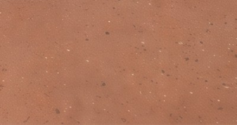
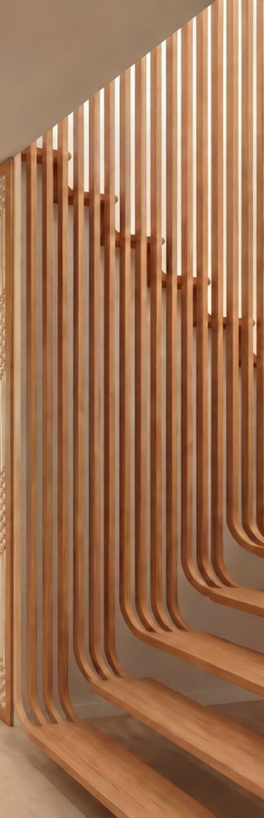
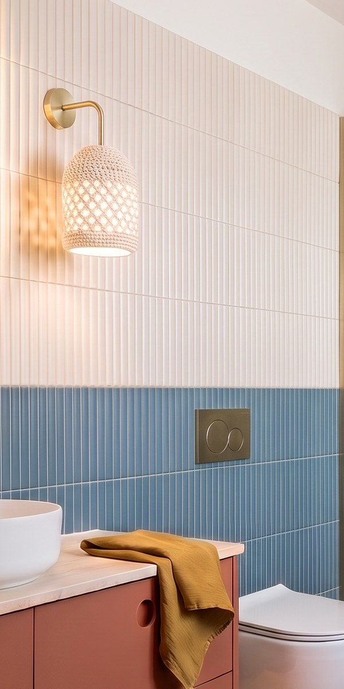

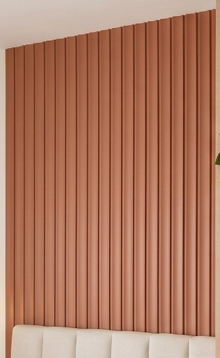